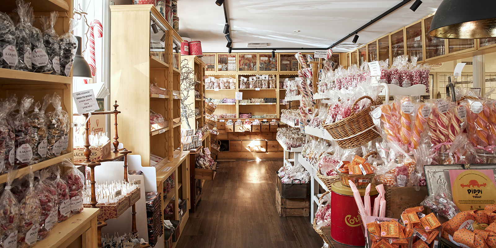
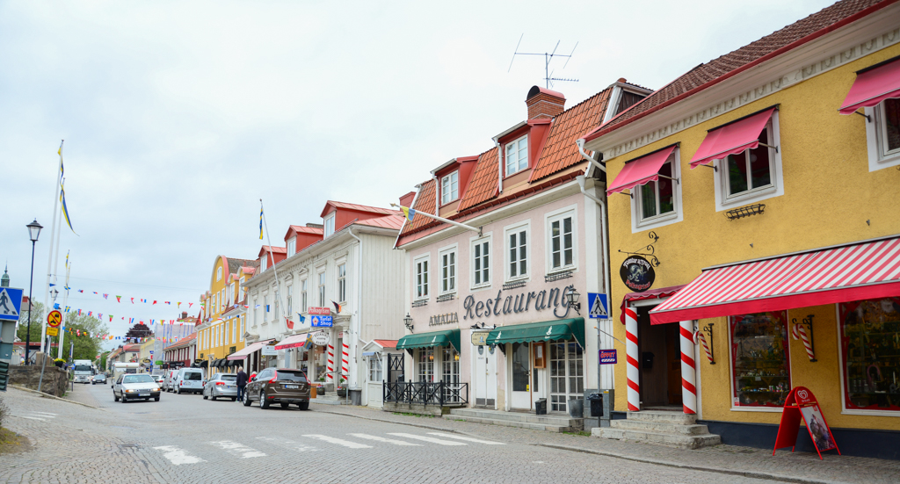
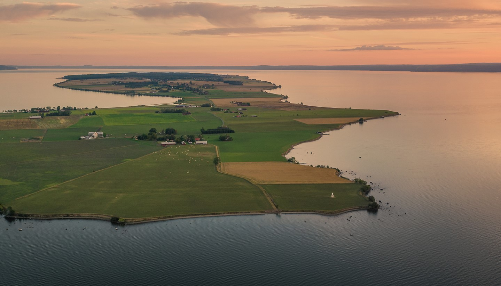
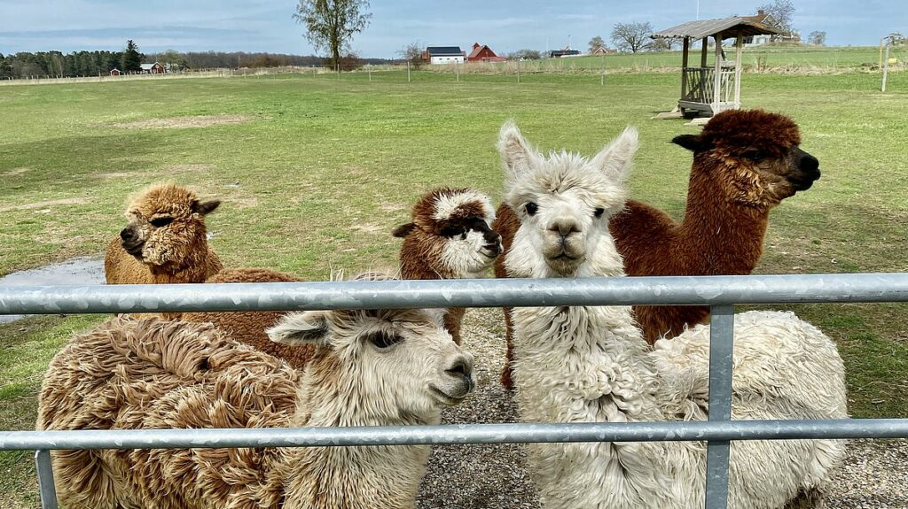
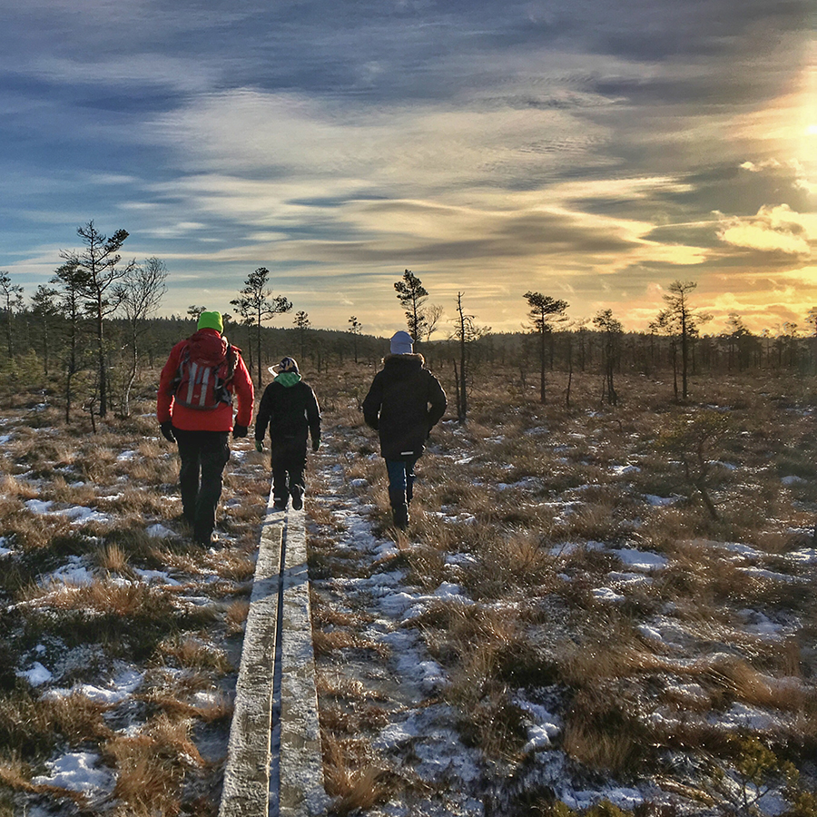
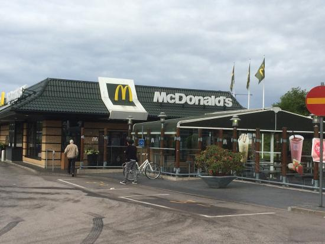
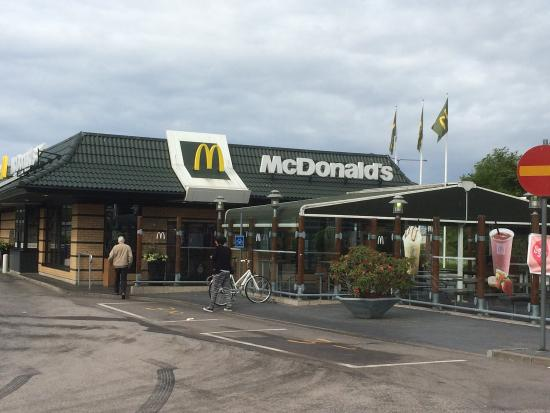

This website was created to show you all the must sees in Jönköping. Here you can find information about what to do in Jönköping, where to eat and where to go out.
Let's look at things you can do or see in Jönköping:1.First on our list is Gränna. It is a small village about a half an hour away by car from Jönköping. You can visit there a candy shop with variety of different sweets, where you can also see how candies are produced.
 2.Another interesting thing you may see is Visingsö island. The island is located on the lake Vättern. You can discover here beautiful nature, architecture and cute alpacas.
 3. Dumme Mosse is great option when you want to spend some time on fresh air, surrounded by nature. It is my go to destinantion for hiking thanks to many different trails which you can find there.

Since I am still a student and I can't afford to exceed my budget, therefore I picked places where you can get tasty food for reasonable price.
Here is a list of places I like to go eat when I don't feel like cooking
 

Thank you for visiting my website! I hope you found some new interesting places in Jönköping and see you next time!